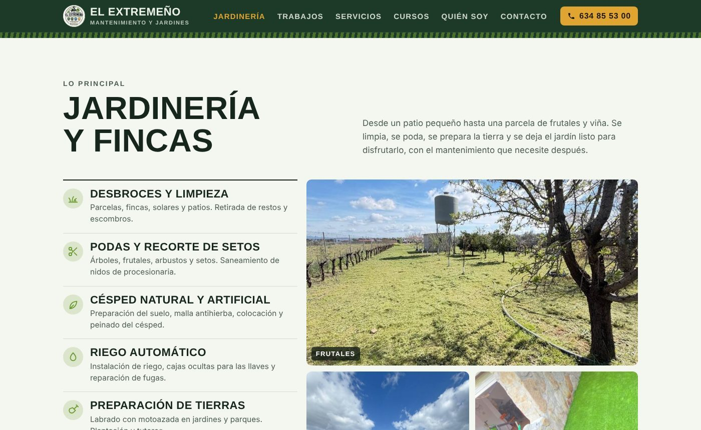
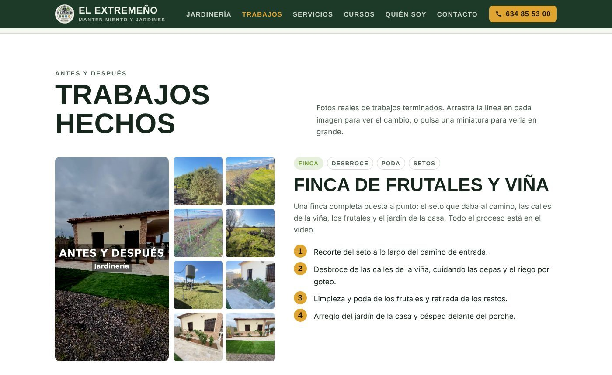
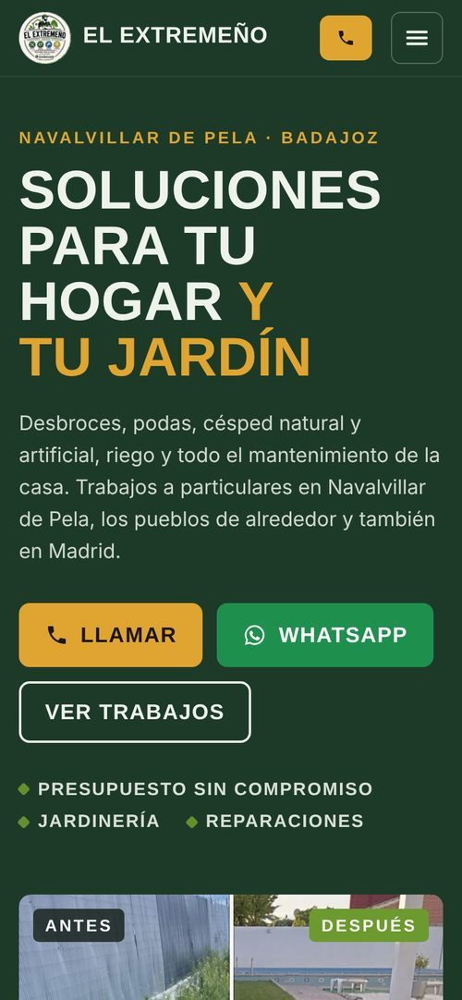

El Extremeño
Web de presentación para un negocio local de jardinería y mantenimiento

Sobre el proyecto
El Extremeño · Mantenimiento y Jardines es la web del negocio de Alfonso Martín Blanco, que hace jardinería, desbroces, podas, riego y reparaciones del hogar en Navalvillar de Pela (Badajoz), los pueblos de alrededor y Madrid.
Es un proyecto real. Alfonso solo trabajaba con Instagram y necesitaba una web a la que mandar a los clientes, con sus trabajos ordenados y una forma rápida de contactar. Me encargué de todo el proceso: organizar el contenido con él, seleccionar y optimizar las fotos, diseñar y programar la web y publicarla con despliegue automático desde GitHub.
Trabajo con un cliente real
La web gira alrededor de lo que el cliente necesitaba: que quien llegue desde Instagram o una búsqueda vea trabajos reales y pueda llamar o escribir en un toque.
- Contenido organizado con el cliente
- Fotos seleccionadas y optimizadas
- Diseño mobile-first
- SEO local con datos estructurados
- Publicación automática en cada cambio
- Caras difuminadas por privacidad
Características principales
Comparador antes/después
Se arrastra la línea sobre la foto; funciona con ratón, dedo y teclado porque es un input range.
Galería con visor
Las miniaturas se abren en grande en un <dialog> que se cierra con X, Escape o pulsando fuera.
Contacto directo
Botones de llamar y WhatsApp siempre visibles y botón para copiar el número.
Modo oscuro automático
Se adapta al tema del dispositivo con prefers-color-scheme.
SEO local
JSON-LD LocalBusiness, Open Graph para compartir por WhatsApp y canonical.
Ligera
Sin frameworks, imágenes con carga diferida y vídeo que solo se descarga al darle al play.
Capturas



Stack Tecnológico
Frontend
- HTML5 semántico
- CSS3 (Grid, Flexbox, variables)
- JavaScript Vanilla
- Barlow (Google Fonts)
SEO & Rendimiento
- JSON-LD LocalBusiness
- Open Graph
- Carga diferida
Despliegue
- Cloudflare
- Publicación desde GitHub
- Caché con _headers